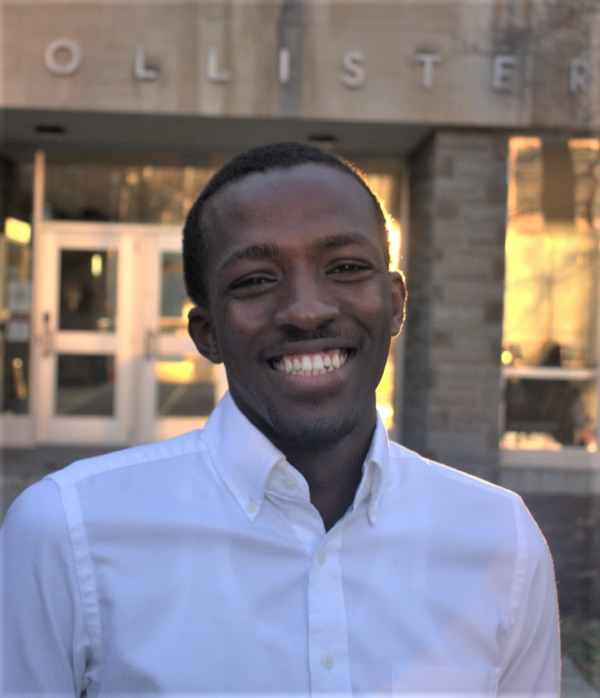

2021.1 Joined the Cornell Student Assembly as a voting member of the Student Assembly Infrastructure Fund Commission.
Samuel Mbugua

About Me
Samuel Mbugua is a masters student in the Bowers college of Computing and Information Science at Cornell University. He also holds a Bachelor of Science in Civil Engineering from Cornell.
His interest is in the intersection of tech and the built world.
Area of Interest
Data Engineering | Data Science | Structural Analysis | Reinforced Concrete | Transportation Systems Engineering | Engineering Economics
Experience
Education
Cornell University '21 Master of Professional Studies in Applied Statistics - Data Science Bachelor of Science in Civil Engineering
Professional Experience
- Facebook Inc | Virtual | Data Engineering Intern
- Facebook University | Menlo Park, CA | Data Analytics Intern
- Equity Bank Kenya LTD | Nairobi | Trade Finance Intern
Teaching Assistance
- CEE 4750 - Concrete Materials and Construction | Cornell
- PHYS 2213 - Physics II: Electromagnetism | Cornell
Grading Assistance
- ENGRD 3200 - Engineering Computation | Cornell
Project Team
- Hyperloop Pod Levitation | Cornell Hyperloop
Updates
2020.11 Led a committee of 9 as Co-lead to organise the Cornell Africa Development Conference (CADC) 2020.
2018.8 Recieved 1st place together with four orther students at the Digital Transformation Hackathon held by the Cornell SC Johnson College of Business. Proposal was imed at objective diagnosis of pain using EEG headsets in response to the opioid crisis.
2018.8 Came in 2nd at the IBM Call for Code Hackathon held by the Cornell College of Engineering. Led a team of 4 in designing a mobile application aimed at reducing confusion during rescue operations after natural disasters occur especially in the developing regions of the world.